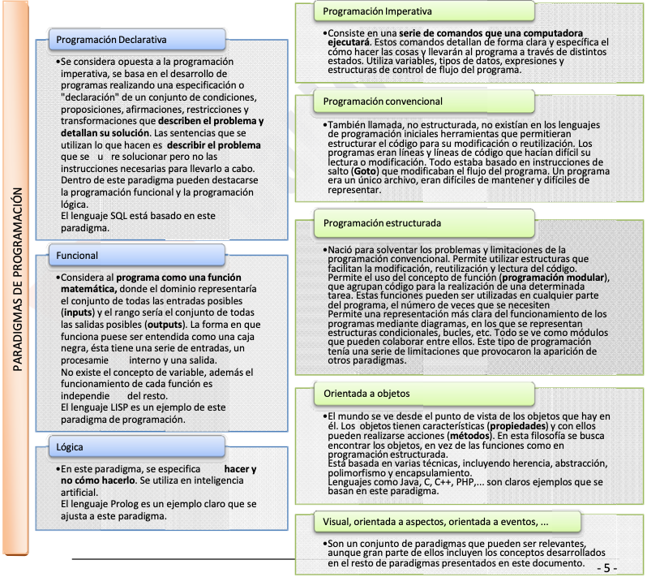
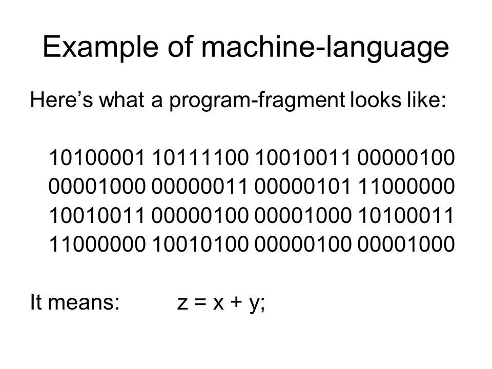
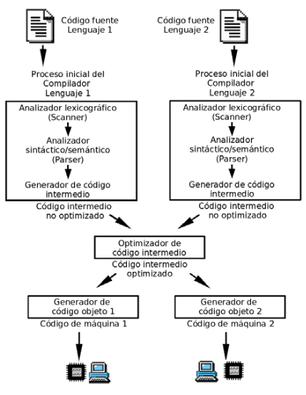

Programación
Tema 1: Introducción
Índice
- Introducción
- Programas y programación
- Paradigmas de programación
- Fases de la programación
- Lenguajes de programación
- Programas en Java
- Entorno de Desarrollo Integrado
Introducción
¿Qué acciones has hecho hoy en las que haya tenido algo que ver la programación?
Seguramente te ha despertado la alarma del móvil, has preparado el desayuno utilizando el microondas, mientras desayunabas has visto u oído las últimas noticias en algún dispositivo multimedia, te has vestido y puede que hayas utilizado el ascensor para bajar al portal...
Índice
- Introducción
- Programas y programación
- Paradigmas de programación
- Fases de la programación
- Lenguajes de programación
- Programas en Java
- Entorno de Desarrollo Integrado
Programas y programación
Programas y programación
Conceptos clave para resolver un problema:
- Abstracción
- Divide y vencerás
- Encapsulación
- Modularidad
Programas y programación
¿Qué es un algoritmo?
Secuencia ordenada de pasos, descrita sin ambigüedades, que conducen a la solución de un problema dado.
¿Y un programa?
Implementación del algoritmo en un lenguaje de programación.
Programas y programación
Técnicas para representar algoritmos:
Índice
- Introducción
- Programas y programación
- Paradigmas de programación
- Fases de la programación
- Lenguajes de programación
- Programas en Java
- Entorno de Desarrollo Integrado
Paradigmas de la programación
¿Qué son?
Formas de clasificar a los lenguajes según sus características.
Paradigmas de la programación
Clasificación general en 2 tipos
- Programación Imperativa: Describe las instrucciones para resolver un problema. Se centra en el cómo.
- Programación Declarativa: Describe la solución esperada de un problema. Se centra en el qué.
Paradigmas de la programación
Clasificación en subtipos

Paradigmas de la programación
Lenguajes multiparadigma
La mayoría de los lenguajes modernos son multiparadigma, como por ejemplo Java, que es estructurado, orientado a objetos y funcional.
Índice
- Introducción
- Programas y programación
- Paradigmas de programación
- Fases de la programación
- Lenguajes de programación
- Programas en Java
- Entorno de Desarrollo Integrado
Fases de la programación
- Resolución del problema
- Análisis
- Diseño
- Implementación
- Codificación o implementación
- Pruebas y validación
- Explotación y mantenimiento
Fases de la programación
Diagramas de flujo. Elementos app.diagrams.net
Fases de la programación
Diagramas de flujo. Ejemplo

Fases de la programación
Diagramas de flujo. Ejemplo
Fases de la programación
Creación de un programa. Ejemplo:
1. Fase de análisis
- Concertar cita con el responsable de la empresa. Se elabora la especificación de requisitos.
- Si el número es par, la empresa quiere que se visualice en pantalla: “Es par”, si es impar, se visualizará en pantalla: “Es impar”.
- Si el número es 0, se visualizará: “Valor introducido incorrecto”.
- Si el número introducido es menor que 0 o mayor que 100, se mostrará: “Valor incorrecto, el rango es 1-100”.
Fases de la programación
Creación de un programa. Ejemplo:
2. Fase de diseño
- Diseñamos el diagrama de flujo
- Redactamos el algoritmo en pseudocódigo
Fases de la programación

Fases de la programación

Ejemplos
Elabora el diagrama de flujo y pseudocódigo para:
- Programa que valora si un número (entre 1 y 3000) es múltiplo de 10
- Un login
Fases de la programación
Creación de un programa. Ejemplo:
3. Fase de codificación
- Transformar el algoritmo al lenguaje de programación concreto
- En este ejemplo, se hará en Java
Fases de la programación
Fases de la programación
Creación de un programa. Ejemplo:
4. Fase de pruebas y validación
- Ejecutamos el programa y realizamos las pruebas
- Documentamos: manuales de instalación, administración, usuario...
Fases de la programación
Creación de un programa. Ejemplo:
5. Fase explotación y mantenimiento
- Una vez está siendo utilizado por los usuarios
- Proceso de mejora y optimización el software
Índice
- Introducción
- Programas y programación
- Paradigmas de programación
- Fases de la programación
- Lenguajes de programación
- Programas en Java
- Entorno de Desarrollo Integrado
Lenguajes de programación
1. Lenguaje máquina

Lenguajes de programación
1. Lenguaje máquina
- Código binario ejecutado directamente en el procesador
- Válido sólo para un tipo de procesador
- Costoso para el programador de aprender e interpretar
- Introducción manual de los comandos y sin comprobación de errores
Lenguajes de programación
2. Lenguaje ensamblador
Lenguajes de programación
2. Lenguaje ensamblador
Lenguajes de programación
2. Lenguaje ensamblador
- Dependencia de la arquitectura del PC
- Necesario controlar los recursos del PC al programar
- Costoso para el programador de aprender e interpretar
Lenguajes de programación
3. Lenguaje compilado. Ejemplo C++
Lenguajes de programación
3. Lenguaje compilado (alto nivel)
- Fácil de aprender e interpretar
- Reduce tiempos de programación
- Independiente del hardware
Lenguajes de programación
3. Lenguaje compilado

Lenguajes de programación
3. Lenguaje compilado
- Se usa un compilador para traducir el código de alto nivel a lenguaje máquina.
- Se genera un ejecutable independiente del código fuente y del compilador.
- Ejemplos: Pascal, C, C++, C#...
Lenguajes de programación
4. Lenguaje interpretado. Ejemplo Python
numero1 = int(input("ingrese un número "));
numero2 = int(input("ingrese otro numero "));
operacion = input("suma, resta, división, multiplicación ");
if operacion == "suma":
print(numero1 + numero2)
elif operacion == "resta":
print(numero1 - numero2)
elif operacion == "división":
print(numero1 / numero2)
elif operacion == "multiplicación":
print(numero1 * numero2)
Lenguajes de programación
4. Lenguaje interpretado (alto nivel)
- Se usa un intérprete para analizar, traducir y ejecutar cada instrucción. Más lento.
- Generan programas más pequeños al no guardar el código máquina.
- En el dispositivo cliente es necesario tener el intérprete instalado
- Ejemplos: PHP, Python, Perl, Javascript...
Lenguajes de programación
Caso particular de Java
- Es pseudo‐compilado o pseudo‐interpretado.
- Su código fuente se compila para obtener el byte-code
- La máquina virtual de Java interpreta el byte-code, traduciéndolo a código máquina del procesador actual para su ejecución
Lenguajes de programación
Caso particular de Java
- El compilador (javac) sólo tiene que estar en la plataforma de desarrollo.
- El intérprete (java) tiene que estar en los clientes que quieran ejecutar la app.
Lenguajes de programación
Diagrama completo con la arquitectura de Java:
Lenguajes de programación
Índice
- Introducción
- Programas y programación
- Paradigmas de programación
- Fases de la programación
- Lenguajes de programación
- Programas en Java
- Entorno de Desarrollo Integrado
Programas en Java
- El código generado por el compilador es independiente de la arquitectura.
- Totalemente orientado a objetos.
- Sintáxis similar a C y C++.
- Amplio conjunto de bibliotecas.
- Distribuido, preparado para aplicaciones TCP/IP.
- Robusto, realiza comprobaciones de código en tiempo de compilación y ejecución.
- Seguro, las aplicaciones Java no acceden a zonas delicadas de memoria o de sistema.
Programas en Java
El código de Java pasa por 2 procesos:
- Compilación: Mediante JDK (Java Development Kit).
- Ejecución: Mediante el JRE (Java Runtime Environment).
Programas en Java
/**
* Estructura general de un programa en Java
*/
public class Clase_Principal {
// Definición de atributos de clase
// Definición de métodos de clase
// Definición de otras clases de usuario
// Declaración del método main o principal
public static void main(String[] args) {
// Declaración de variables del método
// Instrucciones a partir de aquí...
}
}
Programas en Java
- Método principal main. Todo programa Java tiene uno.
- Comentarios, de línea con // o de bloque abriendo /* y cerrando */
- Bloques de código, delimitados por { y }
- Fin de instrucciones mediante ;
Programas en Java
Programas en Java
Ejecuta el siguiente código:
/**
* La clase HolaMundo implementa una aplicación que
* simplemente imprime "Hola Mundo!" por la salida estándar
*/
public class HolaMundo {
// Método principal
public static void main(String[] args) {
// Escribir por salida estándar
System.out.println("Hola Mundo!");
}
}
Programas en Java
- De consola
- Aplicaciones gráficas
- Applets
- Servlets
- Midlets
Índice
- Introducción
- Programas y programación
- Paradigmas de programación
- Fases de la programación
- Lenguajes de programación
- Programas en Java
- Entorno de Desarrollo Integrado
Entorno de Desarrollo Integrado
- Instalar Intellij IDEA marcando las opciones: INFO
Entorno de Desarrollo Integrado
- Instalar Netbeans: INFO
- Crear un proyecto "hola mundo" en cada IDE
Tips de la presentación
¿Imprimir en PDF?
- Clic aquí
- CTRL/CMD + P
- Guardar como PDF
Navegar por las diapositivas
- Pulsa ESC
- Clic a la que quieras ir
A trabajar...